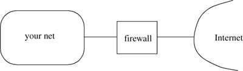

Networking Security Networking Security Networking Security Security Networking Security Networking Security Networking Charlie Kaufman Radia Perlman Mike Speciner Prentice Hall Network Security: Private Communication in a Public World, Second Edition Networking Security Networking Security Networking Security Security Networking Security Networking Security Networking Charlie Kaufman Radia Perlman Mike Speciner Prentice Hall Network Security: Private Communication in a Public World, Second Edition
23. Firewalls
A firewall (see Figure 23-1) is a computer that sits between your internal network and the rest of the network and attempts to prevent bad things from happening (such as internal users sending company secrets outside, or outside people breaking into systems inside) without preventing good things from happening (such as employees accessing information available externally). It is sometimes called other things, like a security gateway, or various more colorful names thought up by frustrated network users when it prevents them from doing what they want to do.

Why is a firewall needed? It isn't if the systems on your internal network are properly secured, meaning that every system in the network has sophisticated authentication, the ability to do integrity-protected and encrypted communication whenever talking across the network, and is well-managed (when users rely on passwords, they choose good passwords; system accounts are not left with no password or a default password; all the latest security patches are installed; ...). Unfortunately many applications exist that were designed (and we use the term loosely) for an environment without bad guys, and most users view security (such as being forced to use long passwords) as an annoyance. Most corporate networks are not designed for security, and have survived because they have not been attacked. But now users want connectivity to the Internet. You want to be able to exchange mail with anyone. You want to occasionally share files. You want to communicate with publicly available services, and make some of your own services available to customers located outside your corporate network. But the Internet is a scary place. There are spies from unfriendly countries, users from competing companies, playful undergraduates, press people eager for a juicy scoop, criminals anxious to steal information for profit, disgruntled ex-employees, and vandals who attempt to compensate for their lack of a social life by annoying others.
One of the reasons systems are hard to secure is that they provide so many services, many by default. You might think that a user workstation would only initiate requests to servers on the user's behalf, but most user workstations provide services like remote access to their file systems and configuration databases. This makes workstations easier to centrally manage and makes it easier to share files, but every service is a point of attack. Even if the services are properly configured to only serve authorized users, they could be missing bounds checks in their input parsers so that a clever attacker can send an ill-formed request and sometimes get access to things the service was not designed to provide. It's common for a user who wants to share a file with another user to make his entire file system remotely mountable (because that's easier than limiting access to a single user and a single file). Often, he intends that things only be opened for a short time, but he forgets and leaves his system exposed indefinitely.
Firewalls centrally manage access to services in ways that individual systems should but don't. They can enforce policies such as systems outside the firewall can't access file services on any systems inside the firewall. With such a restriction, even if the internal systems are more open than they should be or have bugs, they can't be attacked directly from systems outside the firewall.
Also, there are many ways to communicate with a system, since people keep coming up with mechanisms intended for debugging or convenience, and worse yet, many different ways of accomplishing the same purpose. In the university environment, in which a lot of these utilities were developed, it might have been reasonable to trust any message received. But each of these mechanisms is a potential new door into the system. Firewalls attempt to protect systems inside from attack from outside. But in order to do this, the firewall administrator needs to understand all the mechanisms and come up with some way of disallowing the dangerous ones without disabling the necessary ones.
Some example mechanisms include:
finger (port 79), which gives information such as who is logged in, or when a specific user last logged in. telnet (port 23), which allows someone to log into the system from across a network. rlogin (port 513), similar to telnet, but UNIX-specific. Also, whereas telnet requires explicit user authentication, rlogin (along with a few other UNIX utilities known as r utilities, such as rsh) avoids the inconvenience of explicit user authentication by trusting that the source address in the IP header is correct, and if that address is known to be the address of a host trusted by this system, then anything that the message asserts about the identity of the user is believed. ftp (port 21), which allows sharing of files. This protocol is tricky for firewalls because there are two connections madeÂone for control information and one for data. Although a host inside might initiate the transfer (in which case the firewall administrator would like to allow the transfer), the data connection is created by the other end. There is a modified version of the ftp protocol (called passive ftp) in which both connections originate at the requester in order to make firewall logic easier; but until it is deployed everywhere, firewalls will need to deal with the original ftp. X Windows (port 177), which (like telnet and rlogin) allows you to interact with a remote machine, but the display assumes a real monitor that can handle colors and fonts, rather than a "dumb terminal". ICMP (Internet Control Message Protocol, RFC 792), is a protocol for sending messages to a node informing it of various conditions. There is no authentication of an ICMP message. ICMP packets can be recognized because the PROTOCOL field in the IP header is equal to 1. The other mechanisms run on top of TCP or UDP, and therefore can be distinguished based on the PORT field in the layer 4 header. Examples of ICMP messages a system Alice might receive include: notification that some packet Alice had previously sent can't be delivered because the destination address, or an entire range of addresses including the destination's, is unreachable. a redirect, telling Alice to use a particular router for forwarding to a particular address, presumably because the router Alice chose on a previous packet was not the best path to the destination. a ping, which is supposed to be echoed back by the system that receives it. Ping is useful for seeing if a system is alive and reachable.
Notice that there are many ways of doing the same thing. To be logged into a remote machine, one might use telnet, rlogin, or the X Windows utility. None of these utilities were designed to be secure. rlogin is a particularly egregious example. Its primary "advantage" over telnet is that you often won't have to type your username or password. There is a file on a UNIX machine (called /etc/hosts.equiv) that lists IP addresses or host names (from which the IP address will be looked up in DNS). The hosts listed in that file are trusted to assert any user identity, and no password is required. The only authentication of the machine is that the IP header contains the trusted machine's IP address. Also, each user can have in his home directory a file named .rhosts which lists IP addresses or host names that are trusted to assert that user's identity without a password. This allows any user to open up access to his own account without administrative supervision. It also gives this right to any program the user runs.
If one machine is compromised inside your network, the firewall cannot help, since so many other machines, otherwise well-managed, will trust anything coming from the compromised machine.
A lot of the above utilities are dangerous. For instance, ICMP ping can be exploited to find machines to break into. Sending an ICMP message to Alice saying that some range of addresses is unreachable will cause Alice to hang up its connections to machines in the range specified by that ICMP message. Redirects can be used to cause a host to send traffic in a different direction, perhaps towards a compromised machine, making man-in-the-middle attacks easier. Finger can be used to find accounts to start attacking (searching the password space), or more ominously, to find personal information about users.
|